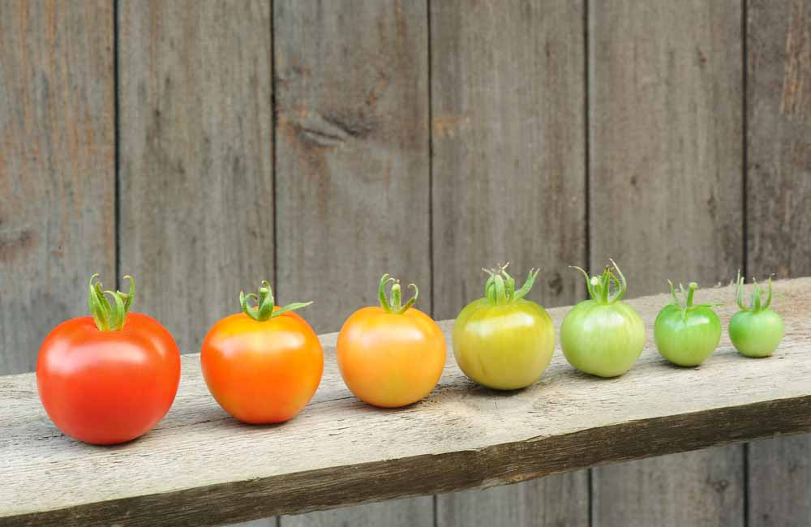
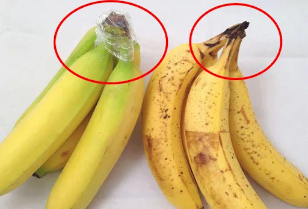
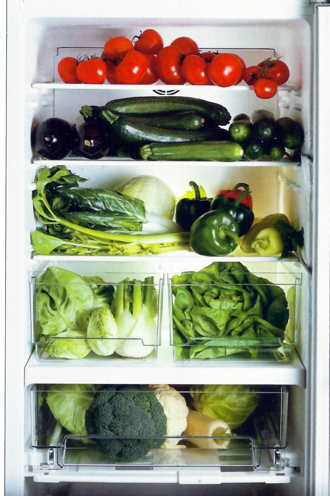

Reducción de desechos
¿Donde guardar correctamente las frutas y verduras?
¿Te ha pasado que compras tus frutas y verduras, pero se te echan a perder y se ponen feas muy pronto?
Bueno, probablemente lo que esté sucediendo es que no estás guardando tus alimentos en el lugar más adecuado.
¡Así es! Algunas frutas y verduras necesitan lugares específicos para que tengan un mayor periodo de
tiempo de duración. En esta sección te enseñaremos donde guardar tus frutas y verduras para que botes
la menos cantidad de comida en tu hogar.
En primer lugar, como regla general debes saber que no es recomendable exponer tus frutas y verduras
al sol. Siempre debes intentar mantenerlas en lugares frescos y protegidos del sol. Es en el caso de muchas
frutas y verduras que la humedad les afecta negativamente, ya que ayuda a que se pudran o sea un ambiente
interesante para las bacterias.
Pasemos de lleno a las verduras. Algunas familias, como las verduras de raíz (zanahorias, nabos), las
verduras de hoja verde (lechuga, espinaca), y las coles (coliflor, brócoli, coles de Bruselas) conviene
mantenerlas en el refrigerador, cubiertas de bolsas plásticas, siempre y cuando recuerdes hacer algunos
agujeros en estas, para que las verduras puedan respirar sin que pierdan su humedad natural.
¿Qué es el etileno?, ¿Y cómo afecta en la maduración de frutas y verduras?
No es buena idea colocar en un mismo recipiente peras con manzanas, ni patatas con cebollas ni plátanos
con aguacates si no queremos que se acelere el ritmo de su maduración hasta el punto de estropearse en
menos tiempo del previsto.
El causante es el etileno, un gas que desprenden todas las frutas y verduras de forma natural al madurar,
aunque algunos de ellos en cantidades tan elevadas que afectan a los que son más sensibles a sus efectos.

No todas las frutas producen etileno tras su recolección. Cabe distinguir, por lo tanto, entre frutas
climatéricas y no climatéricas.
Las climatéricas son las que, incluso tras ser recolectadas, continúan produciendo etileno y, por lo
tanto, siguen con su proceso de maduración. En cambio, las frutas no climatéricas son aquellas que
sólo maduran mientras permanecen en la planta, una vez recolectadas dejan de hacerlo. Estos son
algunos ejemplos de frutas climatéricas y no climatéricas:
Frutas climatéricas: manzana, pera, melón, sandía, ciruela, higo, plátano, mango, kiwi, melocotón, palta, etc.
Frutas no climatéricas: naranja, mandarina, piña, uva, fresa, pomelo, cereza, limón, cacao, frambuesa, etc.
Por ello, un factor muy importante durante el periodo de postcosecha es distinguir entre ambos tipos de frutas para transportarlas y almacenarlas por separado.
Cada cosa en su sitio
La forma correcta de conservar frutas y verduras es separándolas. Los productores de etileno pueden estar a temperatura ambiente, cada uno de ellos aislado de los demás, mientras es preferible guardar los sensibles en la nevera. Las cebollas y las patatas nunca deberían ni rozarse.
DONDE GUARDAR ALGUNAS FRUTAS PRODUCTORAS DE ETILENO:
Fresas. Conviene que estén en la nevera, donde la producción de gas disminuye, pero siempre alejados de los
frutos sensibles a este. No sobreviven más que dos o tres días en fresco.
Mango. No es un gran productor, pero sí lo desprende al madurar. Fuera de la nevera aguanta entre 3 y 5 días,
y una semana, dentro. Congelado, hasta 8 meses.
Manzanas. Sueltan tanto que hay que dejarlas completamente aparte de cualquier otro fruto. Se conservan unas
tres semanas fuera de la nevera, entre 4 y 6 dentro y 8 meses congeladas.
Melón. Los pequeños y de piel más clara, conocidos como “melón tuna” son productores de etileno, mientras otros,
como los “melon calameño” (visualmente similares) son sensibles a él.
Pueden mantenerse hasta dos semanas en el frigorífico, si están sin abrir; si no, no más de uno o dos días. Un mes congelados.
Durazno y ciruelas. Cuando aún están verdes apenas si desprenden etileno, pero el proceso se dispara a medida que avanza su
maduración. Si se quiere que esta sea rápida, lo mejor es dejarla a temperatura ambiente. Eso sí, separada de cualquier otra fruta.
Patatas. Sueltan relativamente poco cuando están en perfectas condiciones. Pueden estar a temperatura ambiente hasta dos meses. No conviene guardarlas refrigeradas. Guardarlas en un lugar fresco y oscuro, alejadas de cualquier otra fruta.

Plátano. Desprenden el etileno a través del pedúnculo y por ese motivo se conservan mejor si este se envuelve en papel film. Cuando han alcanzado el grado de madurez que interesa, se pueden conservar tres o cuatro días en la nevera y hasta 3 meses congelados.
Tomates. Una vez maduros pueden aguantar hasta siete días a temperatura ambiente. Pero como son de los que emiten, hay que mantenerlos separados de todos los demás productores. Además, se recomienda no meterlos en la nevera porque pierden sabor.
Muchos de los vegetales que son sensibles al etileno, también lo producen, pero en cantidades tan pequeñas que no se aprecia. En todo caso, para evitar que se estropeen antes de tiempo, hay que mantenerlos separados de los que sí lo emiten.
Donde guardar algunas frutas sensibles al etileno
Brócoli. Si se mantiene junto a productos emisores, su duración se reduce al 50%. Se nota porque los ramilletes se
ponen amarillentos. Aislado se puede conservar 4 o 5 días en la nevera. La mejor forma de mantenerlo fresco es congelándolo,
incluso hasta un año.
Calabaza. Aunque la corteza esté dura y fresca en apariencia, el etileno, que suele afectar su interior, que se
reblandece. Maduran muy rápido si se cosechan junto a plantas que lo emiten. Fuera del frigorífico duran hasta dos o tres
meses; cinco o seis en su interior.

Cebolla. Como su durabilidad es similar a la de las patatas, hay una cierta tendencia a almacenarlas juntas,
pero no es conveniente. En la nevera aguantan hasta dos meses. Así que se pueden guardar ahí, pero siempre separadas de
manzanas, tomates, etcétera.
Coles de Bruselas. Son las más sensibles al etileno, pese a que producen una cantidad mínima. Ante la
exposición, las hojas pierden color e incluso se separan. Su conservación es similar a la del brócoli.
Coliflor. Es de las hortalizas más sensibles y hay que evitar juntarla con manzanas, melones y
tomates. Perdura entre 3 y 5 semanas si está separada.
Espárragos. El gas hace que se mustien e incluso que adopten un tono amarillento, por lo que
es aconsejable mantenerlos siempre refrigerados, pero no se conservan más de 3 o 4 días. Congelados
aguantan más de cinco meses.
Lechuga y otras verduras de hoja verde. Aunque no todas tienen la misma sensibilidad al gas, a
la mayoría les afecta. El problema está en que a veces se preparan mezcladas en ensaladas con hortalizas
que emiten el gas. Lo aconsejable es prepararlas justo antes de servirlas para evitar que las hojas
lleguen mustias a la mesa.
Zanahorias. Se vuelven amargas en un par de semanas si estan junto a un vegetal productor del
gas. Aisladas duran hasta tres semanas.